Trenérka II. třídy ČTS
Mgr. Barbora Suková
Dlouholetá extraligová hráčka TK Neride.
Tenisový klub Čelákovice. Šest antukových dvorců v klidném zeleném areálu, 30 minut z Prahy, s parkováním přímo na místě.
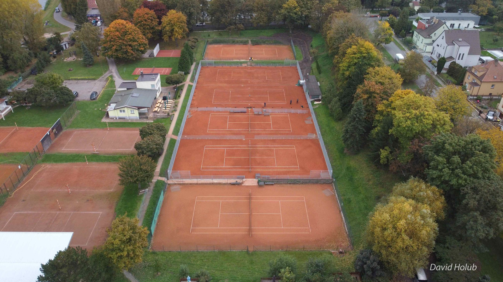
Online v systému Roger, nebo telefonicky v otevírací době.
Rezervovat onlineRezervace v otevírací doběPo–Ne
9:00–11:30·16:00–22:00
Zimní tenisová sezóna: 18. 10. 2026 – 2. 4. 2027
Rekonstrukce 4 antukových dvorců a sociálního zařízení je dokončená. Fotky z průběhu prací vedou od vybouraného sociálního zařízení v březnu až k hotovým dvorcům s novými čarami v září.
Tréninky akademie se od 16. 6. 2025 dočasně přestěhovaly na kurt u Volmanovy vily.
8. 9. 2025
den 172 ze 209
Hotové dvorce s novými čarami.
Táhněte jezdcem po ose, klikněte na datum nebo použijte šipky ← →
Rekonstrukci podpořily Národní sportovní agentura a Město Čelákovice.
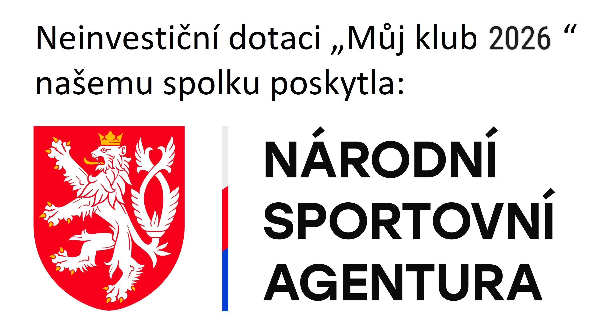
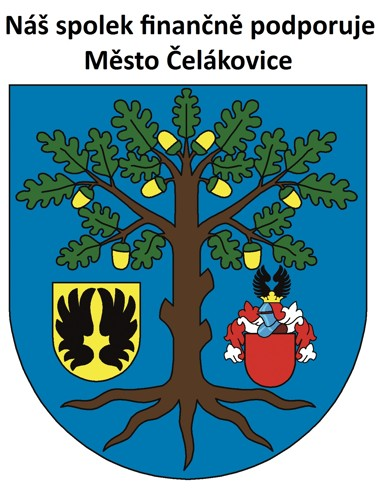
Příjemný sportovní areál v klidném prostředí v blízkosti Labe. Na zhruba 10 000 m² jsou kromě dvorců převážně zelené plochy a vlastní budova klubovny. Celý areál udržují členové vlastními silami.
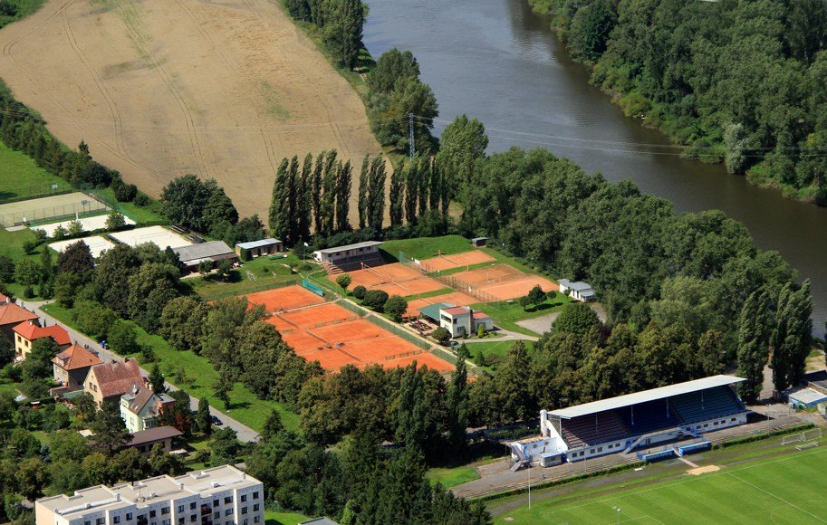
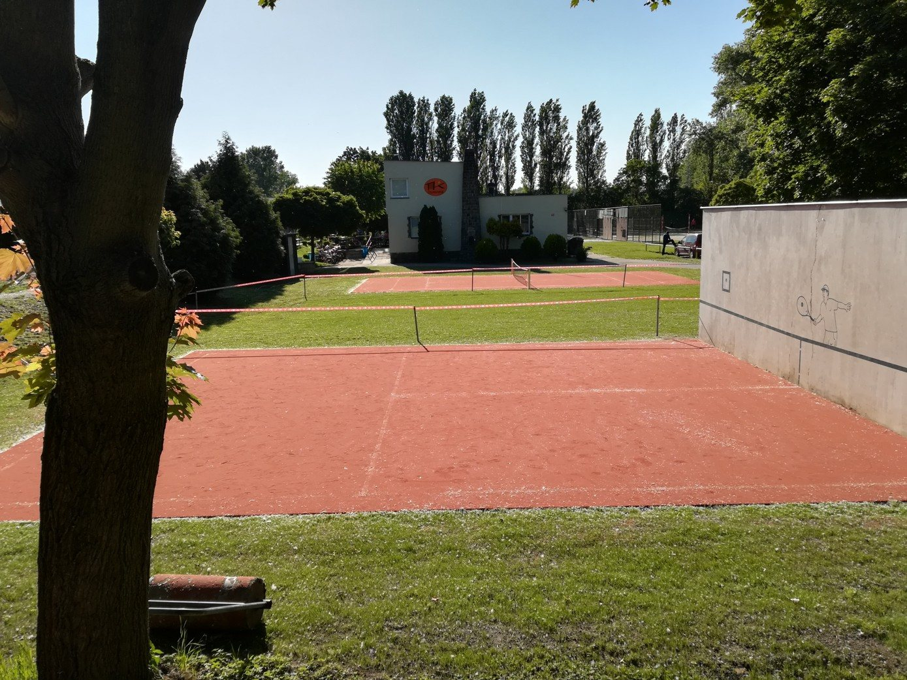
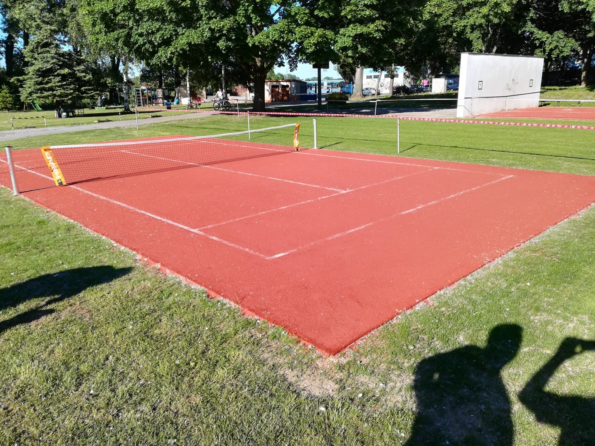
Ceník schválila valná hromada 13. 12. 2014. Příspěvky lze na požádání rozložit: nejméně 50 % před hrou, 50 % do 30. 6.
240Kč / hodina
Pronájem dvorce pro nečleny, placeno před hrou.
| Členské příspěvky | Rozsah | Odečet za brigády | Kč / rok |
|---|---|---|---|
| Dospělí | celodenní hraní | až −1 000 | 5 000 |
| Dospělí | dopolední hraní | až −1 000 | 2 500 |
| Studenti, mládež do 18 let | — | až −1 000 | 3 500 |
| Děti, mládež do 15 let | — | neplatí | 1 500 |
| Hráči školičky do 10 let | — | neplatí | 100 |
| Nehrající členové | základní příspěvek; při opakované hře doplatek 1 000 Kč, odehrané hodiny podle ceníku | neplatí | 500 |
| Vstup do klubu, nové členství | zahrnuje příspěvek i brigády za první rok | — | 7 000 |
Brigádní hodiny: každá odpracovaná hodina sníží příspěvek o 100 Kč, nejvýš 10 hodin (1 000 Kč). Mládež do 15 let brigády dělat nemusí.
Ceník platí od 1. 1. 2015.
Tenisové tréninky pro aktivní děti. Sezóna říjen 2026 – červen 2027, od 18. 10. 2026 se trénuje v hale podle zimního rozvrhu.
Přihlášky online v systému tenisové školy, nevratná záloha 1 500 Kč.
Trenérka II. třídy ČTS
Dlouholetá extraligová hráčka TK Neride.
Trenér II. třídy ČTS
Závodní hráč A‑týmu TK Čelákovice.
Trenér II. třídy ČTS
Závodní hráč A‑týmu TK Čelákovice.
Trenér III. třídy ČTS
Závodní hráč A‑týmu TK Čelákovice.
Pro hráče všech věkových kategorií, kteří mají zájem o zlepšení své tenisové hry o prázdninách. V létě 2026 byly vypsané čtyři termíny, termíny na rok 2027 zatím nejsou zveřejněné.
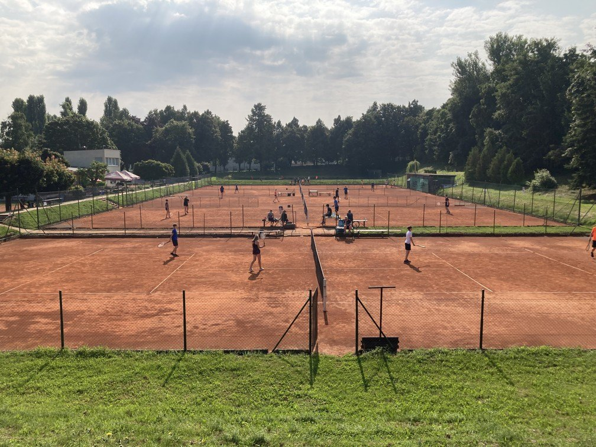
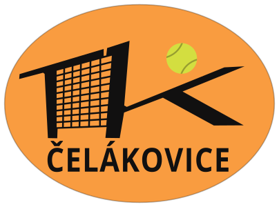
Klub byl založen 6. července 1930 jako Tenisový klub LTK 1930. V letech 1956–1991 existoval pod názvem SPARTAK Čelákovice. Dnešní spolek navazuje na tradici prvorepublikového klubu a hlásí se k tradicím tělovýchovné jednoty a sportu v Čelákovicích. V roce 2030 klub oslaví 100 let.
Klub se snaží vychovávat nové generace tenistů a celkově žije sportovně‑společenským životem. Členové se pravidelně scházejí pro sport, pobavení, ale i proto, aby vlastními silami udržovali celý areál. Každoročně klub pořádá několik turnajů nejen pro mládež.
Klubový turnaj členů ve čtyřhře. Vzpomínka na jednoho z nestorů čelákovického sportu, dlouholetého aktivního hráče a správce klubu, „který tenisovým klubem žil“.
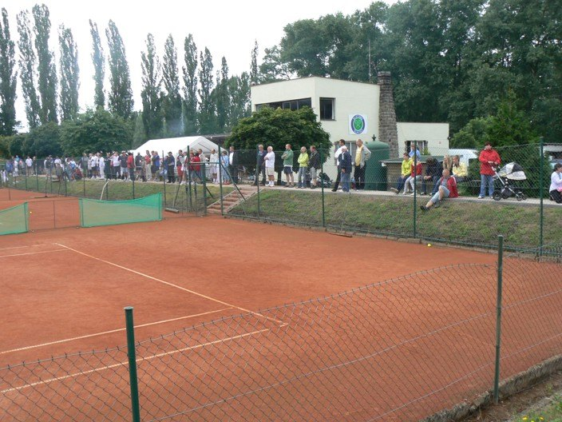
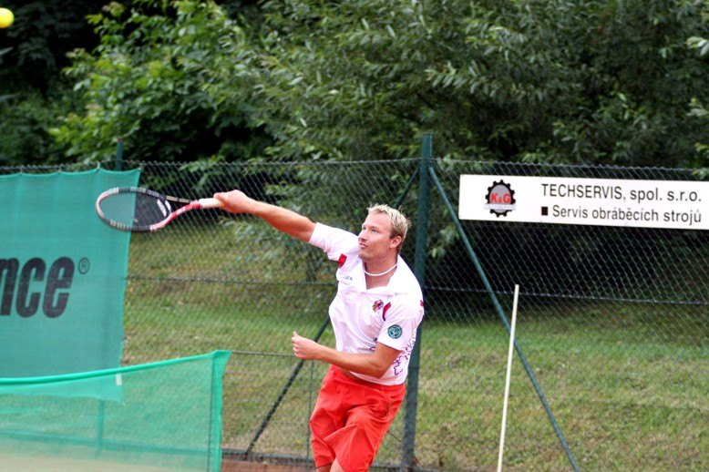
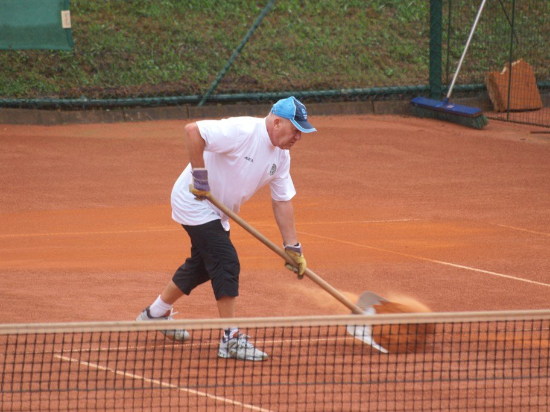
Venkovní antuka odpočívá, akademie trénuje v hale.
Akademie: venku do 16. 10., od 18. 10. v hale podle nového rozvrhu.
Čtyři letní termíny, Po–Pá 9:00–16:00. Termíny a cena
S podporou Národní sportovní agentury a Města Čelákovice. Průběh na fotkách
Klub hospodaří z příspěvků členů. Finančně pomáhá Město Čelákovice a pár dalších sponzorů, kterých si klub nesmírně váží.
TK Čelákovice
U Kapličky 1705
250 88 Čelákovice
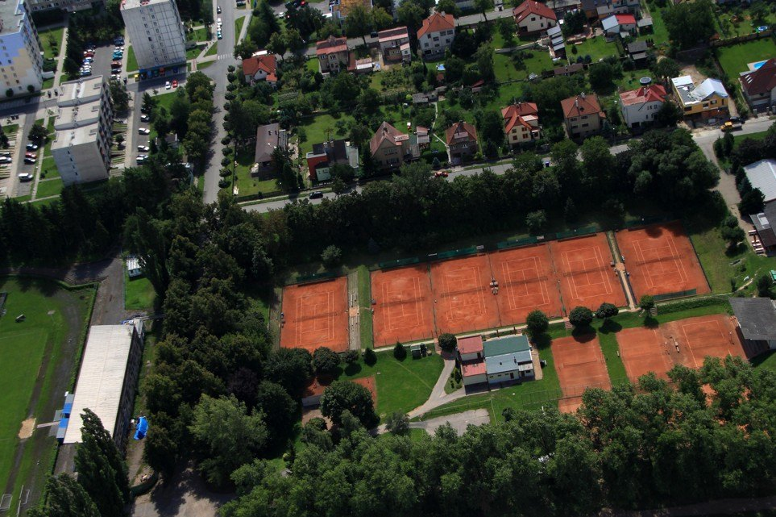